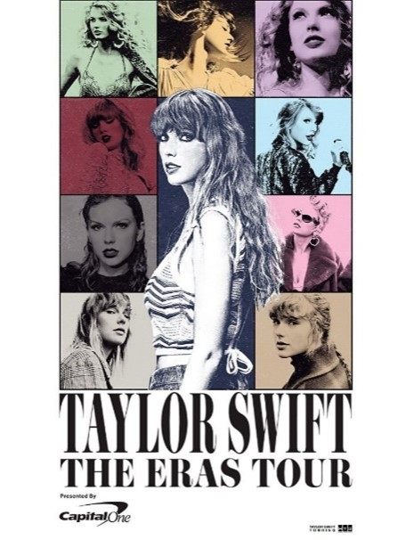

The Eras Tour
In November 2022, Taylor Swift announced her biggest project yet The Eras Tour. This show marked the singers return to touring after the postponement and eventual cancellation of Lover Fest, a tour planned to center around her seventh studio album, Lover (2019), in the year 2020 following the outbreak of COVID 19. This cancellation did not stop Swift from continuing to create music....
...While housebound like the rest of the world, Taylor Swift worked to release her eighth and ninth albums in 2020, then went on to release her tenth album in 2022.
By the end of 2022, the singer had released four (Lover, folklore, evermore, and Midnights) albums without going on tour. Swifts response to this was to create a show that focused on not just one specific album, but instead on every era of her career. The show was planned to include songs from every one of the singers eleven albums, featuring different outfits and stage props to make each era have its own distinct aesthetic.
Fans were invited to join Swifts deep dive into her 18 years of music and encouraged to dress up in outfits from their favorite eras. Being a fan is about more than listening to music, it is about being part of a community, and the Eras Tour is one of the biggest reminders of that.